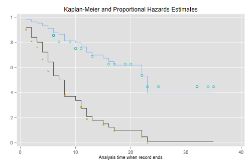
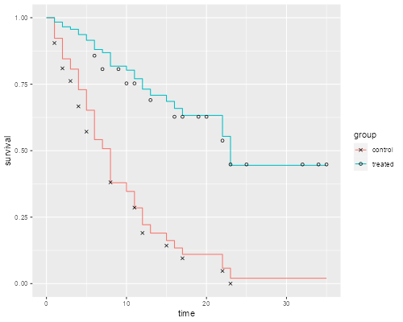
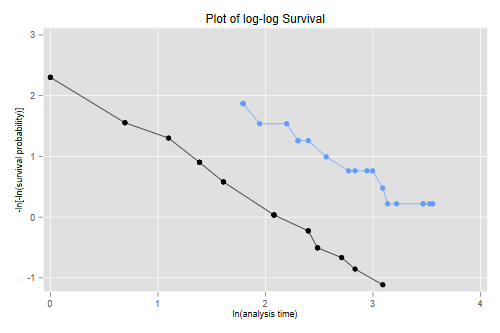
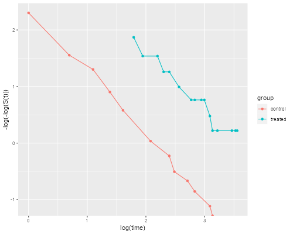

<h2 class="first" id="cox">Cox’s Proportional Hazards Model</h2>
<p>We continue our analysis of the leukemia remission times introduced
in the context of the <a href="KaplanMeier">Kaplan-Meier</a> estimator.
This is the dataset used as an example in Cox’s original paper: Cox,
D.R. (1972) Regression Models and Life tables, (with discussion) Journal
of the Royal Statistical Society, 34: 187–220.</p>

{% include srtabs.html %}

<pre class='stata'>. use https://grodri.github.io/datasets/gehan, clear    
(Dataset used in Cox's 1972 paper, JRSS 34:187-220)

. stset weeks, failure(relapse)

Survival-time data settings

         Failure event: relapse!=0 &amp; relapse&lt;.
Observed time interval: (0, weeks]
     Exit on or before: failure

──────────────────────────────────────────────────────────────────────────
         42  total observations
          0  exclusions
──────────────────────────────────────────────────────────────────────────
         42  observations remaining, representing
         30  failures in single-record/single-failure data
        541  total analysis time at risk and under observation
                                                At risk from t =         0
                                     Earliest observed entry t =         0
                                          Last observed exit t =        35
</pre>
<pre class='r'>> library(survival)
> library(dplyr)
> library(ggplot2)
> gehan &lt;- read.table("https://grodri.github.io/datasets/gehan.dat")
> summarize(gehan, events = sum(relapse), exposure = sum(weeks))
  events exposure
1     30      541
</pre>
<p>We fit a model that assumes a proportional effect of treatment at all
durations. There are different ways of handling ties and we choose the
Efron method, which is an option in Stata and the default in R.</p>
<pre class='stata'>. // gen treated = group == "treated"
. stcox treated, efron

        Failure _d: relapse
  Analysis time _t: weeks

Iteration 0:   log likelihood =  -93.18427
Iteration 1:   log likelihood = -85.018612
Iteration 2:   log likelihood = -85.008426
Iteration 3:   log likelihood = -85.008425
Refining estimates:
Iteration 0:   log likelihood = -85.008425

Cox regression with Efron method for ties

No. of subjects =  42                                   Number of obs =     42
No. of failures =  30
Time at risk    = 541
                                                        LR chi2(1)    =  16.35
Log likelihood = -85.008425                             Prob > chi2   = 0.0001

─────────────┬────────────────────────────────────────────────────────────────
          _t │ Haz. ratio   Std. err.      z    P>|z|     [95% conf. interval]
─────────────┼────────────────────────────────────────────────────────────────
     treated │   .2076035    .085615    -3.81   0.000     .0925128    .4658729
─────────────┴────────────────────────────────────────────────────────────────
</pre>
<pre class='r'>> gehan &lt;- mutate(gehan, treated = as.numeric(group == "treated"))
> cm &lt;- coxph(Surv(weeks, relapse) ~ treated, data = gehan)
> cm
Call:
coxph(formula = Surv(weeks, relapse) ~ treated, data = gehan)

           coef exp(coef) se(coef)      z        p
treated -1.5721    0.2076   0.4124 -3.812 0.000138

Likelihood ratio test=16.35  on 1 df, p=5.261e-05
n= 42, number of events= 30 
> exp(coef(cm)) - 1
   treated 
-0.7923965 
</pre>
<p>The results show that at any given duration since remission, the risk
of relapse is 79% <em>lower</em> in the treated group.</p>
<p>To check the assumption of proportionality of hazards one may
introduce interactions with duration. In a two-group analysis like this
it is also possible to plot the Kaplan-Meier estimates. Here’s the plot
in Cox’s paper</p>
<pre class='stata'>. predict S0, basesurv            // control (not mean!)

. gen S1 = S0^exp(_b[treated])    // treated

. sts gen KM = s, by(treated)     // two Kaplan-Meiers

. twoway (scatter S0  _t, c(J) ms(none) sort)  /// baseline
>   (scatter S1 _t , c(J) ms(none) sort)     /// treated
>   (scatter KM _t if treated, msymbol(circle_hollow)) /// KM treated
>   (scatter KM _t if !treated, msymbol(X)) /// KM base
> , legend(off) title(Kaplan-Meier and Proportional Hazards Estimates)   

. graph export coxkm.png, width(500) replace          
file coxkm.png saved as PNG format
</pre>
<p></p>
<pre class='r'>> km &lt;- survfit(Surv(weeks, relapse) ~ treated, data=gehan)
> sf &lt;- survfit(cm, newdata=list(treated=c(0, 1)))   
> dsf &lt;- data.frame(time = rep(c(0,sf$time), 2),
+   survival = c(1, sf$surv[,1], 1, sf$surv[,2]), 
+   group = factor(rep(c("control","treated"),
+   rep(length(sf$time) + 1, 2))))
> dkm &lt;- data.frame(time = km$time, 
+   survival = km$surv,
+   group = factor(rep(c("control","treated"),
+   km$strata)))    
> ggplot(dsf, aes(time, survival, color = group)) + geom_step() +
+   geom_point(data = dkm, aes(time, survival, shape=group), color="black") +
+   scale_shape_manual(values = c(4, 1))  # x and o
> ggsave("coxkmr.png", width=500/72, height=400/72, dpi=72) 
</pre>
<p></p>
<p>Another way to check proportionality of hazards is to plot the
log-log transformation of the survival functions versus log time, that
is <span
class="math inline">−<em>log</em>(−<em>log</em>(<em>S</em>(<em>t</em>))</span>
versus <span class="math inline">log(<em>t</em>)</span>, as the lines
should then be parallel if the assumption holds.</p>
<pre class='stata'>. stphplot, by(treated) legend(off) title(Plot of log-log Survival)

        Failure _d: relapse
  Analysis time _t: weeks

. graph export coxphplot.png, width(500) replace
file coxphplot.png saved as PNG format
</pre>
<p></p>
<pre class='r'>> dkm &lt;- mutate(dkm,  lls = -log(-log(survival)))
> ggplot(dkm, aes(log(time), lls, color=group)) + geom_point() +
+   geom_line() +  ylab("-log(-log(S(t)))")
> ggsave("coxphplotr.png", width=500/72, height=400/72, dpi=72)
</pre>
<p></p>
<p>The two lines look quite parallel indeed, showing a good fit of the
proportional hazards assumption.</p>
<p>A more detailed treatment of these topics may be found in my <a
href="/pop509">survival analysis course</a>. The discussion here is an
excerpt from the pages dealing with Kaplan-Meier and Cox regression.</p>
